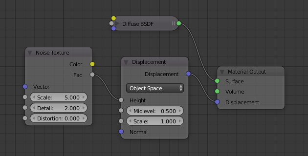
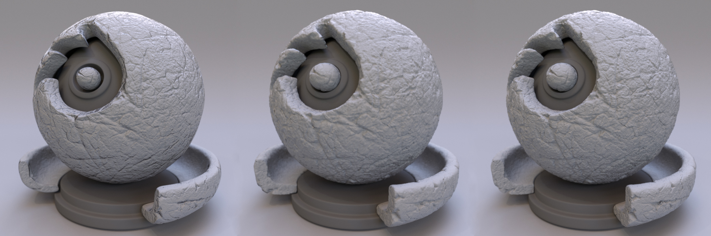

置换着色器¶
参考
- 面板
可以使用置换着色器将细节添加表面的形状。
要创建置换，请连接 Displacement 或 Vector Displacement 节点到材质输出节点的置换输出接口。然后可以将程序，绘制或烘焙的纹理连接到这些节点。

典型的置换节点设置。¶
存在三种置换方法，具有不同的精度、性能和内存占用。

仅凹凸，仅置换，置换和凹凸相结合。¶
仅仅置换¶
最精确和最占内存的置换方法是将真实置换应用于网格表面。
它需要对网格进行精细细分，这可能需要大量的内存。 Adaptive Subdivision 是细分网格的最佳方法，根据物体与相机的距离，可以使用恰当的细分量。
对于烘焙置换贴图，使用16位或32位浮点贴图可获得最佳结果，因为8位字节图像通常无法表示所有必需的细节。
See also
通过 置换修改器 也可以用来取代网格。
仅凹凸¶
最不精确但内存效率最高的方法是使用凹凸贴图。这种方法实际上并没有改变网格表面，只是改变了阴影，使其看起来像这样。
凹凸贴图通常用于在模型上添加较小的细节，例如皮肤上的毛孔或皱纹。
对于烘焙凹凸贴图，通常使用8位字节图像，但是16位或32位浮动贴图可以提供更好的效果。当使用图像纹理时，使用立方插值来避免步进瑕疵，与其他类型的纹理相比，这些纹理对凹凸贴图更为可见。
Important
因为凹凸贴图是一种假效果，所以如果几何体的实际形状与凹凸贴图的形状不太相同，它可能会导致瑕疵。如果发生这种情况，应降低凹凸贴图的强度或使用实际的置换。
置换和凹凸¶
都可以结合使用两种方法，实际置换来获得更大的置换，而凹凸可以获得更精细的细节。这可以提供一个很好的平衡来减少内存使用。
一旦将网格细分得很细，最好只使用实际置换。保留凹凸贴图只会增加内存使用量并使渲染速度变慢。